Last updated: 2024-04-23
Checks: 7 0
Knit directory:
drift_matrix_factorization/
This reproducible R Markdown analysis was created with workflowr (version 1.7.1). The Checks tab describes the reproducibility checks that were applied when the results were created. The Past versions tab lists the development history.
Great! Since the R Markdown file has been committed to the Git repository, you know the exact version of the code that produced these results.
Great job! The global environment was empty. Objects defined in the global environment can affect the analysis in your R Markdown file in unknown ways. For reproduciblity it’s best to always run the code in an empty environment.
The command set.seed(20240416) was run prior to running
the code in the R Markdown file. Setting a seed ensures that any results
that rely on randomness, e.g. subsampling or permutations, are
reproducible.
Great job! Recording the operating system, R version, and package versions is critical for reproducibility.
Nice! There were no cached chunks for this analysis, so you can be confident that you successfully produced the results during this run.
Great job! Using relative paths to the files within your workflowr project makes it easier to run your code on other machines.
Great! You are using Git for version control. Tracking code development and connecting the code version to the results is critical for reproducibility.
The results in this page were generated with repository version a986598. See the Past versions tab to see a history of the changes made to the R Markdown and HTML files.
Note that you need to be careful to ensure that all relevant files for
the analysis have been committed to Git prior to generating the results
(you can use wflow_publish or
wflow_git_commit). workflowr only checks the R Markdown
file, but you know if there are other scripts or data files that it
depends on. Below is the status of the Git repository when the results
were generated:
Ignored files:
Ignored: .DS_Store
Ignored: .Rhistory
Note that any generated files, e.g. HTML, png, CSS, etc., are not included in this status report because it is ok for generated content to have uncommitted changes.
These are the previous versions of the repository in which changes were
made to the R Markdown (analysis/regression-simulation.Rmd)
and HTML (docs/regression-simulation.html) files. If you’ve
configured a remote Git repository (see ?wflow_git_remote),
click on the hyperlinks in the table below to view the files as they
were in that past version.
| File | Version | Author | Date | Message |
|---|---|---|---|---|
| Rmd | a986598 | Annie Xie | 2024-04-23 | Add initial analysis of tree-simulated data |
In this project, I am interested in exploring how well a regression-based factorization can recover tree structure in the data. Therefore, I wanted to run a simulation where the “true” loadings matrix has a tree structure (i.e. the loadings are binary and hierarchical), and see how well the regression-based factorization matches the true values.
library(flashier)Loading required package: ebnmLoading required package: magrittrlibrary(ebnm)
library(ashr)
library(ggplot2)
library(pheatmap)
library(NNLM)plot_heatmap <- function(L, title = ""){
### define the color map
cols <- colorRampPalette(c("gray96", "red"))(49)
brks <- seq(min(L), max(L), length=50)
plt <- pheatmap(L, show_rownames = FALSE, show_colnames = FALSE, cluster_rows = FALSE, cluster_cols = FALSE, color = cols, breaks = brks, main = title)
return(plt)
}structure_plot_general = function(Lhat,Fhat,grouping,title=NULL, loadings_order = 'embed', print_plot=FALSE, seed=12345, n_samples = NULL, gap=40, show_legend=TRUE, K = NULL, plot.colors = NULL){
set.seed(seed)
#if not told to plot all samples, then plot a sub-sample
if(is.null(n_samples)&all(loadings_order == "embed")){
n_samples = 2000
}
if(is.null(plot.colors)){
plot.colors <- rainbow(ncol(Lhat))
}
#normalize L such that each factor has a maximum loading value of 1
#results in an error if all the entries of a column are 0
# this doesn't do the normalization if all the entries are below 1 (think about!)
#Lhat = apply(Lhat,2,function(z){z/max(max(z),1)})
#if not told to plot all factors, then plot the requested subset
if(!is.null(K)){
Lhat = Lhat[,1:K]
Fhat = Fhat[,1:K]
}
Fhat = matrix(1,nrow=3,ncol=ncol(Lhat))
#add column names to Lhat if it doesn't have column names
if(is.null(colnames(Lhat))){
colnames(Lhat) <- paste0("k",1:ncol(Lhat))
}
#define multinom_topic_model_fit for structure plot function
fit_list <- list(L = Lhat,F = Fhat)
class(fit_list) <- c("multinom_topic_model_fit", "list")
#plot
p <- fastTopics::structure_plot(fit_list,grouping = grouping, loadings_order = loadings_order, n = n_samples, colors = plot.colors, gap = gap,verbose=F) + labs(y = "loading",color = "dim",fill = "dim") + ggtitle(title)
if(!show_legend){
p <- p + theme(legend.position="none")
}
if(print_plot){
print(p)
}
return(p)
}source("~/Documents/PhD 3/Research/EBCD/ebcd_functions.R")
#source("~/Documents/PhD 3/Research/EBCD/gbcd_functions.R")
source("~/Documents/PhD 3/Research/EBCD/gbcd-workflow/code/fit_cov_ebnmf.R")To generate the data, I modified code I found from Jason’s github repository. We are modeling six populations that follow a tree structure. Therefore, the loadings matrix is binary and has a hierarchical structure. The entries of the factor matrix are generated using normal random variables. Normal random noise is added to the product of the loadings and factor matrix.
# modified from Jason's code
sim_6pops_noadmix <- function(pop_sizes,
branch_sds,
indiv_sd,
n_genes = 1000,
seed = 666) {
set.seed(seed)
n <- sum(pop_sizes)
p <- n_genes
FF <- matrix(rnorm(11 * p, sd = rep(branch_sds, each = p)), ncol = 11)
LL <- matrix(0, nrow = n, ncol = 11)
LL[, 1] <- 1
LL[, 2] <- rep(c(1, 1, 1, 0, 0, 0), times = pop_sizes)
LL[, 3] <- rep(c(0, 0, 0, 1, 1, 1), times = pop_sizes)
LL[, 4] <- rep(c(1, 0, 0, 0, 0, 0), times = pop_sizes)
LL[, 5] <- rep(c(0, 0, 0, 1, 0, 0), times = pop_sizes)
LL[, 6] <- rep(c(0, 1, 1, 0, 0, 0), times = pop_sizes)
LL[, 7] <- rep(c(0, 0, 0, 0, 1, 1), times = pop_sizes)
LL[, 8] <- rep(c(0, 1, 0, 0, 0, 0), times = pop_sizes)
LL[, 9] <- rep(c(0, 0, 1, 0, 0, 0), times = pop_sizes)
LL[, 10] <- rep(c(0, 0, 0, 0, 1, 0), times = pop_sizes)
LL[, 11] <- rep(c(0, 0, 0, 0, 0, 1), times = pop_sizes)
divmat <- matrix(nrow = n, ncol = 6)
divmat[, 1] <- LL[, 1]
divmat[, 2] <- LL[, 2] - LL[, 3]
divmat[, 3] <- LL[, 4] - LL[, 6]
divmat[, 4] <- LL[, 5] - LL[, 7]
divmat[, 5] <- LL[, 8] - LL[, 9]
divmat[, 6] <- LL[, 10] - LL[, 11]
E <- matrix(rnorm(n * p, sd = indiv_sd), nrow = n)
pops <- rep(LETTERS[1:length(pop_sizes)], times = pop_sizes)
return(list(Y = LL %*% t(FF) + E, LL = LL, FF = FF, divmat = divmat, pops = pops))
}# modified from Jason's code
sim_data_6pop <- sim_6pops_noadmix(pop_sizes = c(rep(1, 6)),
branch_sds = c(20, 10, 6, 4, 4, 4, 2, 2, 2, 1, 1),
indiv_sd = 1,
n_genes = 10000)dim(sim_data_6pop$Y)[1] 6 10000plot_heatmap(sim_data_6pop$LL)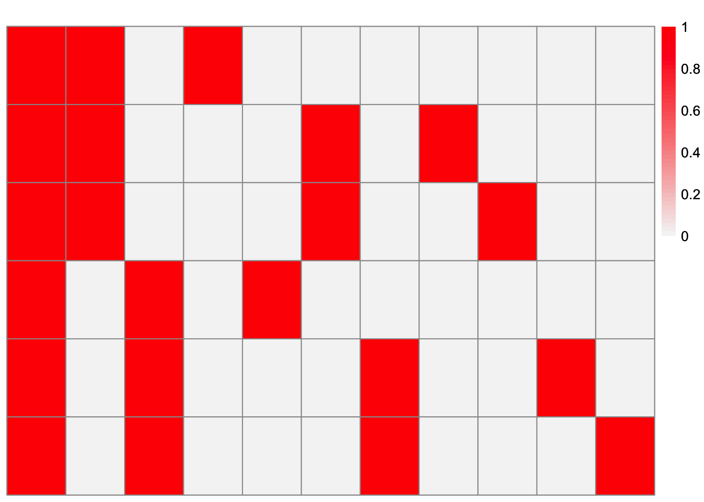
structure_plot_general(sim_data_6pop$LL%*% diag(c(20, 10, 6, 4, 4, 4, 2, 2, 2, 1, 1)),
sim_data_6pop$LL%*% diag(c(20, 10, 6, 4, 4, 4, 2, 2, 2, 1, 1)),
n_samples = 6,
plot.colors = c('#FF3030', '#1E90FF', '#B23AEE', '#FFFF00', '#FF3E96', '#00EE00',
'#97FFFF', '#FF7F00', '#FFAEB9', '#698B22', '#FFE7BA'))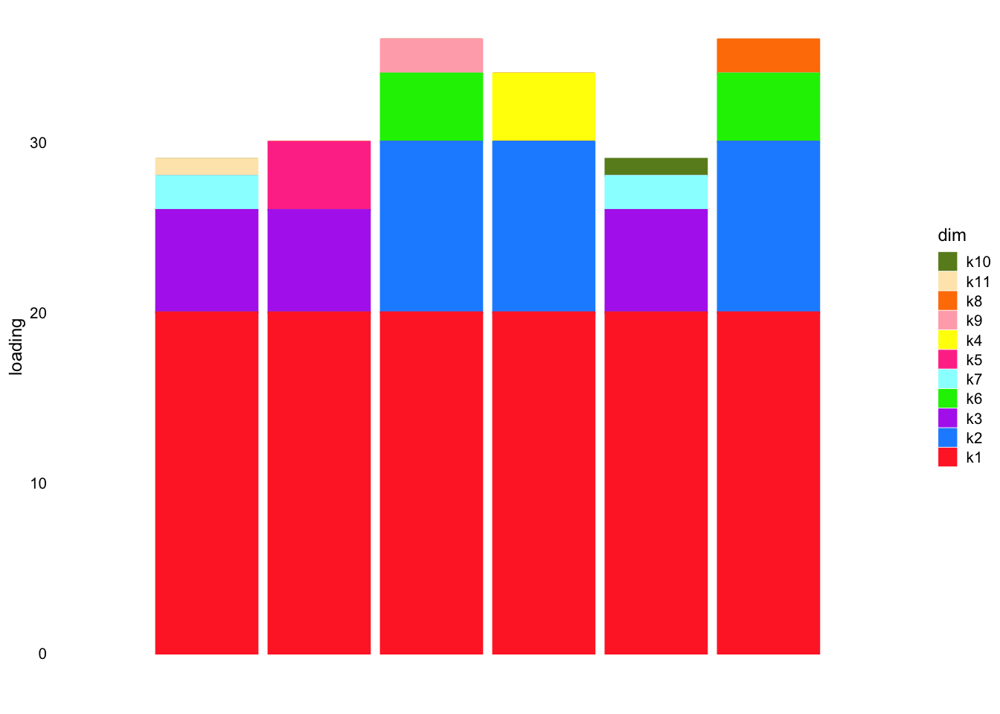
We see that populations 1,2, and 5 have a shared component (the bright yellow bar). In addition, populations 3,4, and 6 have a shared component (the orange bar). Furthermore, populations 1 and 5 have another shared component (the blue bar), and populations 3 and 6 have another shared component (the sea foam green bar).
Here, we will use penalized-regression to find a factorization of the
data matrix. The details can be found in the
small-sample-factorization file.
I’m not sure if the penalized-regression will find a factorization that is hierarchical. I think theoretically it should be able to if the data has a hierarchical structure. But I’m unsure if the correlation between the vectorized \(LL^{T}\) vectors will cause the penalized regression to just pick one covariate out of many correlated covariates. I looked at the correlation between the vectors, and the highest values are about 0.5, which is not very large, but not insignificant either.
#small sample workflow
small_sample_matrix_factorization <- function(P, alpha_l1 = 0){
dat <- t(P) %*% P/ncol(t(P))
n = nrow(t(P))
L_options <- t(expand.grid(replicate(n, 0:1, simplify = FALSE)))
LLt_options <- matrix(rep(0, ncol(L_options)*n*n), ncol = ncol(L_options))
for (i in 1:ncol(L_options)){
LLt_options[,i] <- c(L_options[,i]%*%t(L_options[,i])) #check this
}
nnlm_fit <- nnlm(LLt_options, as.matrix(c(dat), ncol = 1), alpha = c(0,0,alpha_l1))
indices_keep <- (nnlm_fit$coefficients > 0)
lambda <- nnlm_fit$coefficients[indices_keep]
X_keep <- LLt_options[,indices_keep]
rank_one_matrices <- lapply(split(X_keep, seq(ncol(X_keep))), function(x){return(matrix(x, ncol = n))})
LLt_estimate <- matrix(rep(0, prod(dim(dat))), ncol = ncol(dat))
for (i in 1:length(lambda)){
LLt_estimate <- LLt_estimate + lambda[i]*rank_one_matrices[[i]]
}
L_est <- L_options[,indices_keep] %*% diag(sqrt(lambda))
return(list(nnlm_fit = nnlm_fit, LLt_estimate = LLt_estimate, L_est = L_est))
}set.seed(2042)
fit.regression <- small_sample_matrix_factorization(t(sim_data_6pop$Y), alpha_l1 = 13.5)Warning in nnlm(LLt_options, as.matrix(c(dat), ncol = 1), alpha = c(0, 0, : x
does not have a full column rank. Solution may not be unique.observed.vals <- sim_data_6pop$Y %*% t(sim_data_6pop$Y)/ncol(sim_data_6pop$Y)sum((observed.vals - fit.regression$LLt_estimate)^2)[1] 2685324ggplot(data = NULL, aes(x = c(observed.vals), y = c(fit.regression$LLt_estimate))) + geom_point() + geom_abline(intercept = 0, slope = 1, color = 'red')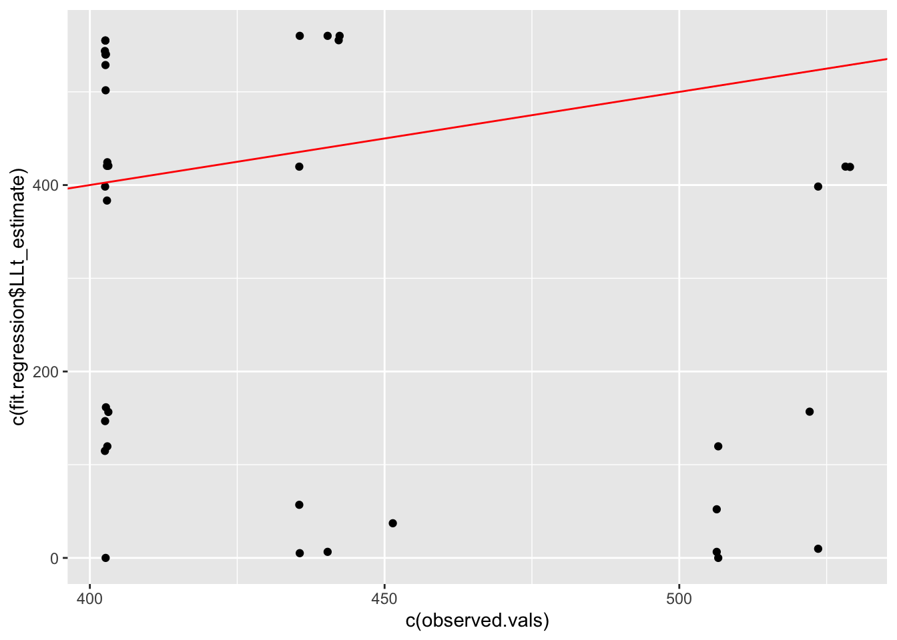
dim(fit.regression$L_est)[1] 6 11This is a heatmap of the loadings:
plot_heatmap(fit.regression$L_est)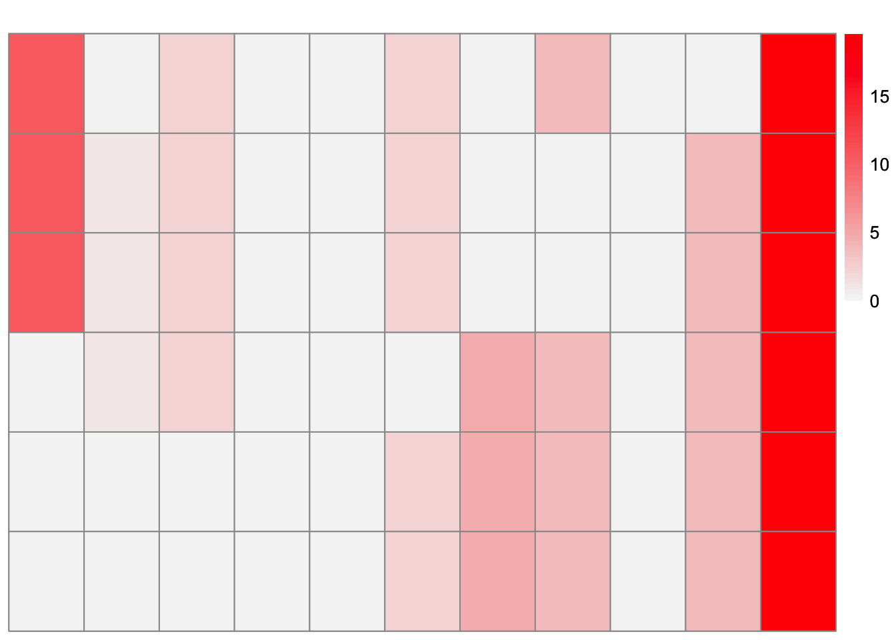
plot_heatmap(t(t(fit.regression$L_est)/apply(fit.regression$L_est,2, max)))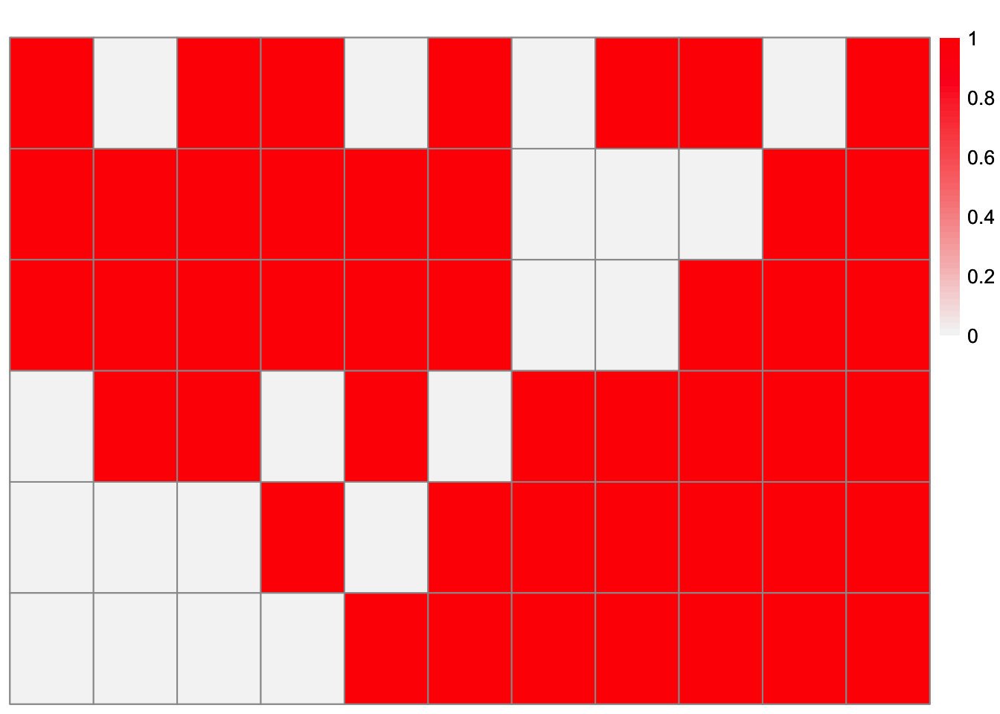
This is a structure plot of the loadings:
structure_plot_general(fit.regression$L_est, fit.regression$L_est,
n_samples = 6,
plot.colors = c('#FF3030', '#1E90FF', '#B23AEE', '#FFFF00', '#FF3E96', '#00EE00',
'#97FFFF', '#FF7F00', '#FFAEB9', '#698B22', '#FFE7BA'))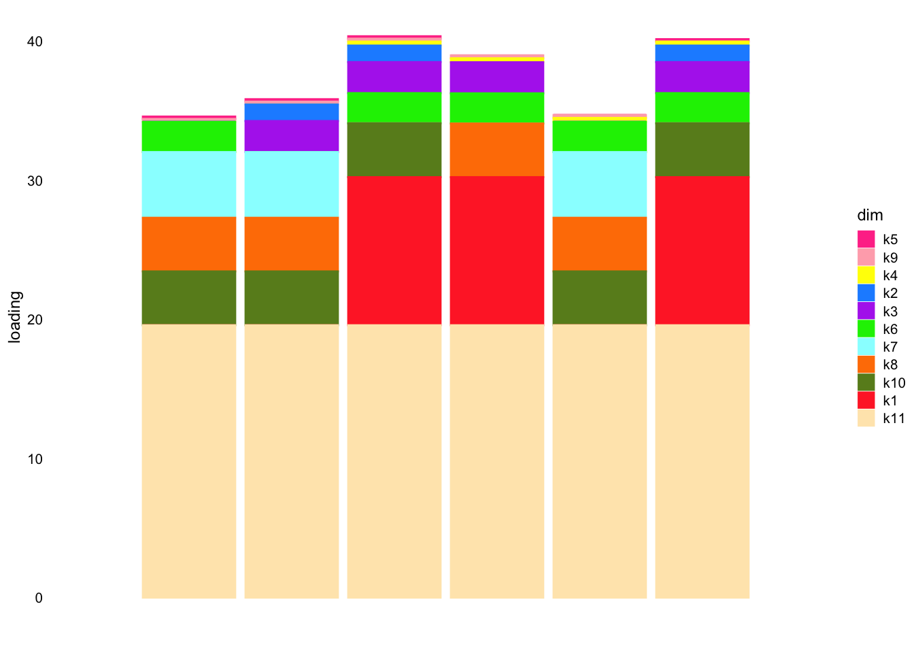
The results show that populations 3,4, and 6 have a shared component (the red bar). Populations 3,4, and 6 also have a shared component in the true loadings matrix. In addition, populations 1,2, and 5 have some shared components. In the true loadings matrix, populations 1,2, and 5 have a singular shared component (besides the baseline component). However, in the results, these populations have three shared components. Furthermore, some of these components are also shared with other populations, which is not the case for the true loadings matrix.
One thing of note is these results are not hierarchical. For example, populations 1,2,4, and 5 have a shared component (the dark blue bar); however population 4 has a component (the red bar) that is not shared with populations 1,2, and 5, but shared with other populations. Given that the true loadings matrix is hierarchical, it would be ideal for our estimate to also have a hierarchical structure. It seems like the regression-based method has difficulty capturing hierarchical structure in the data.
One possible explanation could be the signal to noise ratio for some of the branches. Another possible explanation could be the correlation between different \(L\) options – the penalized regression randomly chooses one covariate among all of the moderately correlated ones. I’m curious what the results would look like if we used SuSie to fit the regression.
Another thing of note is the fitted values do not match the observed values well. I’m not exactly sure why – perhaps it is related to the level of penalization I used. I’m not exactly sure.
EBCD should give us an orthogonal factor matrix, which can be interpreted as the drifts, along with the loadings for the drift events. Previous analyses have shown that EBCD doesn’t appear to have issues with fitting \(K\) factors where \(K\) is larger than the number of samples. I hypothesize that EBCD should be able to recover the hierarchical structure of the loadings since we use the generalized binary prior and the branches of the tree can be thought of as orthogonal factors.
set.seed(295)
fit.ebcd <- ebcd(X = t(sim_data_6pop$Y), Kmax = 11, ebnm_fn = ebnm::ebnm_generalized_binary)ebcd.fitted.vals <- fit.ebcd$EL %*% t(fit.ebcd$EL)sum((observed.vals - ebcd.fitted.vals)^2)[1] 2.206055e-08ggplot(data = NULL, aes(x = c(observed.vals), y = c(ebcd.fitted.vals))) + geom_point() + geom_abline(intercept = 0, slope = 1, color = 'red')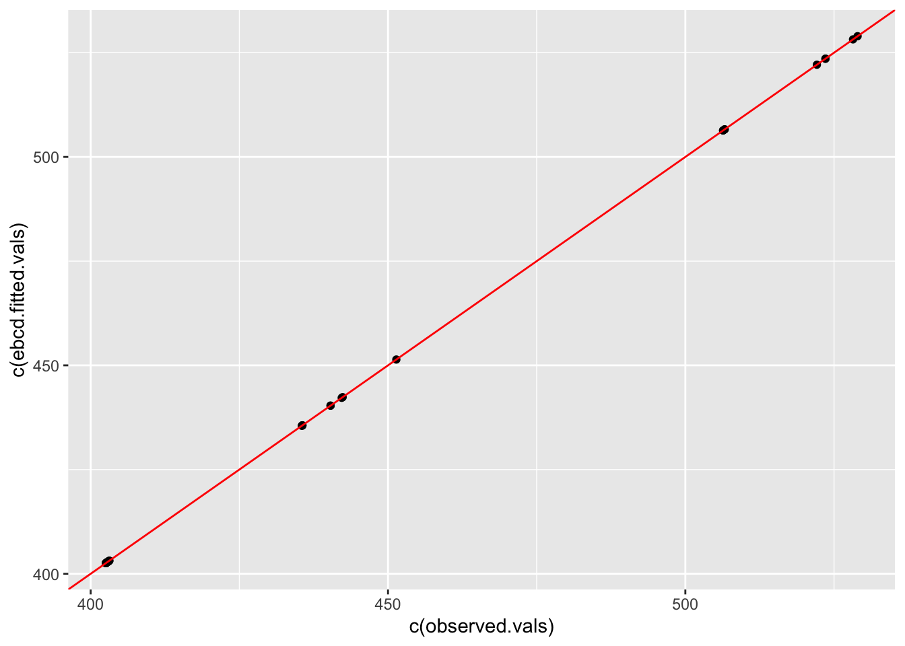
plot_heatmap(fit.ebcd$EL)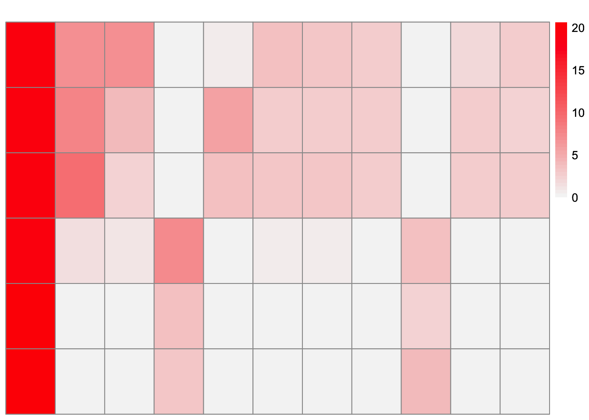
plot_heatmap(t(t(fit.ebcd$EL)/apply(fit.ebcd$EL,2, max)))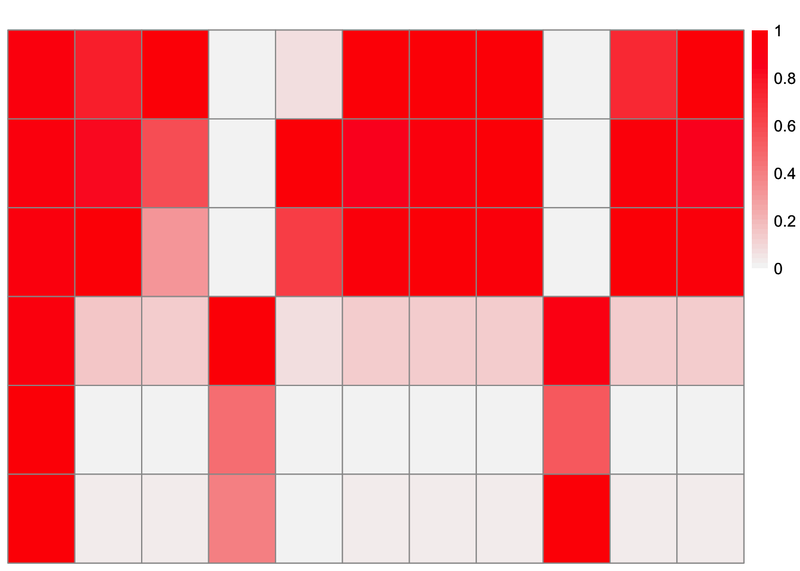
structure_plot_general(fit.ebcd$EL, fit.ebcd$EL,
n_samples = 6,
plot.colors = c('#FF3030', '#1E90FF', '#B23AEE', '#FFFF00', '#FF3E96', '#00EE00',
'#97FFFF', '#FF7F00', '#FFAEB9', '#698B22', '#FFE7BA'))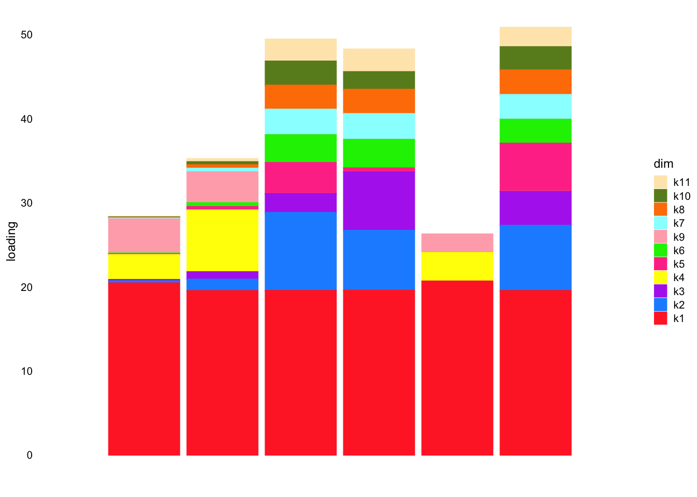
The EBCD results do not perfectly capture the tree structure of the true loadings matrix. The results suggest a significant shared component among populations 3,4, and 6. In addition, there is a shared component (the indigo bar) among populations 1,2, and 5. In the true loadings matrix, populations 1 and 5 have an additional shared component – that does not clearly hold for the EBCD results. In the true loadings matrix, populations 3 and 6 also have an additional shared component – populations 3 and 6 do share a green bar that population 4 does not significantly have. (There are two green bars that are very close in color, so I need to change the color settings to get a clearer understanding of the differences.)
I know that Joon has been using a version of EBCD with a tree-based initialization. So I am curious if using a tree-based initialization would induce tree structure into the final estimate.
The fitted values from the EBCD output do match the observed values well. Even the diagonal entries match well which is different from what I found in other simulations.
Previous analyses applying GBCD to these small matrices did not lead to good results. More specifically, GBCD has difficulty adding more than a few factors. Therefore, I predict the same thing will happen in this simulation.
fit.gbcd <- flash_fit_cov_ebnmf(Y = sim_data_6pop$Y, Kmax = 11)I had some technical difficulties when running GBCD because the method only fit one factor. Therefore, I do not have an output, but in general, we would expect the method to fit more than one factor. The first factor is often interpreted as a baseline factor, so we would expect to fit additional factors to represent sources of variation. I’m not exactly sure why GBCD performs so poorly on these examples. Perhaps it is the very small sample size.
set.seed(2042)
fit.regression_a9 <- small_sample_matrix_factorization(t(sim_data_6pop$Y), alpha_l1 = 9)Warning in nnlm(LLt_options, as.matrix(c(dat), ncol = 1), alpha = c(0, 0, : x
does not have a full column rank. Solution may not be unique.sum((observed.vals - fit.regression_a9$LLt_estimate)^2)[1] 2888426ggplot(data = NULL, aes(x = c(observed.vals), y = c(fit.regression_a9$LLt_estimate))) + geom_point() + geom_abline(intercept = 0, slope = 1, color = 'red')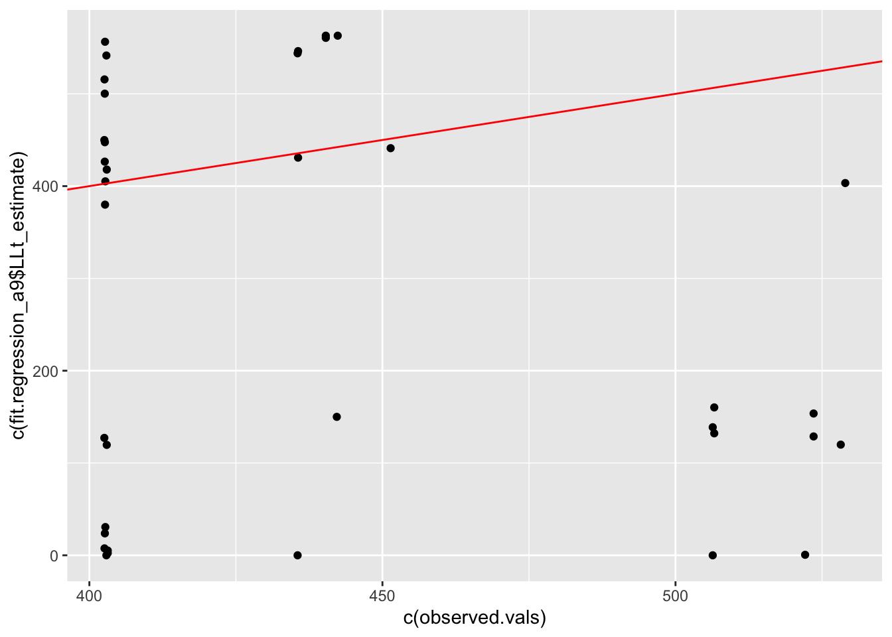
dim(fit.regression_a9$L_est)[1] 6 18This is a heatmap of the loadings:
plot_heatmap(fit.regression_a9$L_est)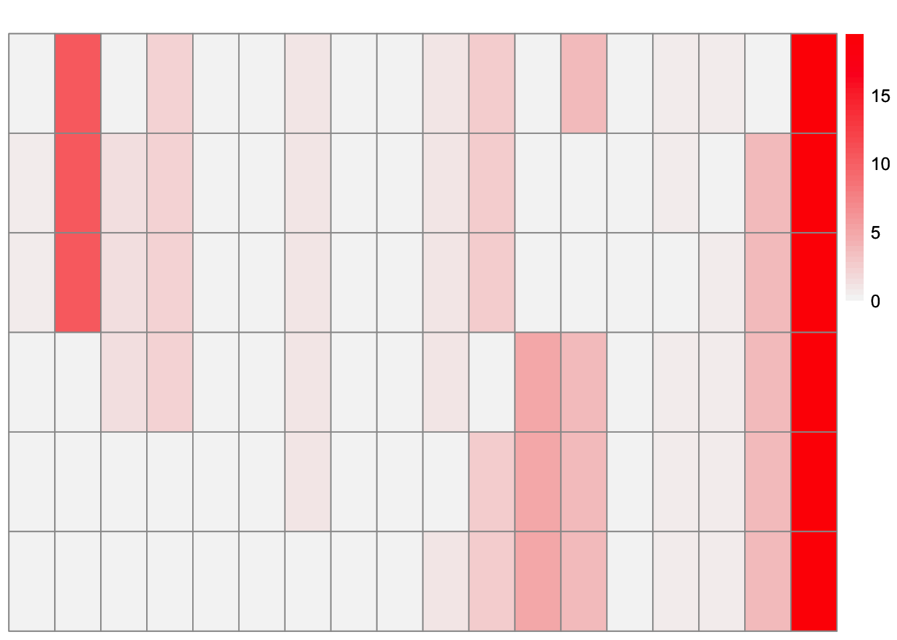
This is a structure plot of the loadings:
structure_plot_general(fit.regression_a9$L_est, fit.regression_a9$L_est,
n_samples = 6,
plot.colors = c('#FF3030', '#1E90FF', '#B23AEE', '#FFFF00', '#FF3E96', '#00EE00',
'#97FFFF', '#FF7F00', '#FFAEB9', '#698B22', '#FFE7BA', '#FFD700',
'#A52A2A', '#68228B', '#F0FFF0', '#CDCDC1', '#708090', '#8B5A00'))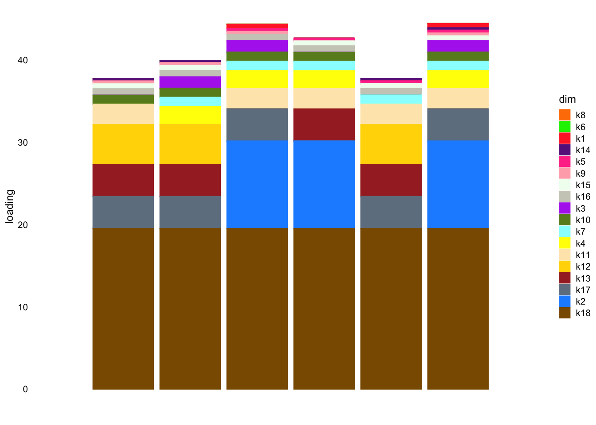
set.seed(2042)
fit.regression_a20 <- small_sample_matrix_factorization(t(sim_data_6pop$Y), alpha_l1 = 20)Warning in nnlm(LLt_options, as.matrix(c(dat), ncol = 1), alpha = c(0, 0, : x
does not have a full column rank. Solution may not be unique.sum((observed.vals - fit.regression_a20$LLt_estimate)^2)[1] 3023331ggplot(data = NULL, aes(x = c(observed.vals), y = c(fit.regression_a20$LLt_estimate))) + geom_point() + geom_abline(intercept = 0, slope = 1, color = 'red')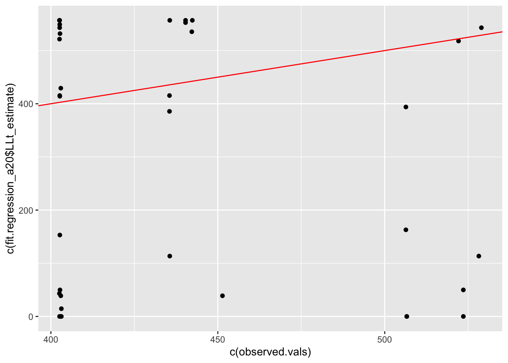
dim(fit.regression_a20$L_est)[1] 6 8This is a heatmap of the loadings:
plot_heatmap(fit.regression_a20$L_est)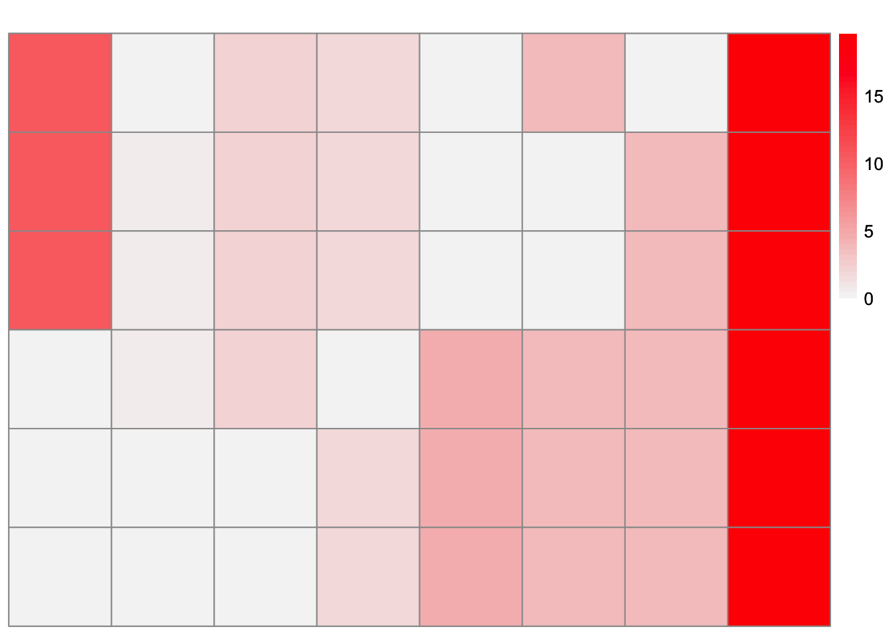
This is a structure plot of the loadings:
structure_plot_general(fit.regression_a20$L_est, fit.regression_a20$L_est,
n_samples = 6,
plot.colors = c('#FF3030', '#1E90FF', '#B23AEE', '#FFFF00', '#FF3E96', '#00EE00',
'#97FFFF', '#FF7F00'))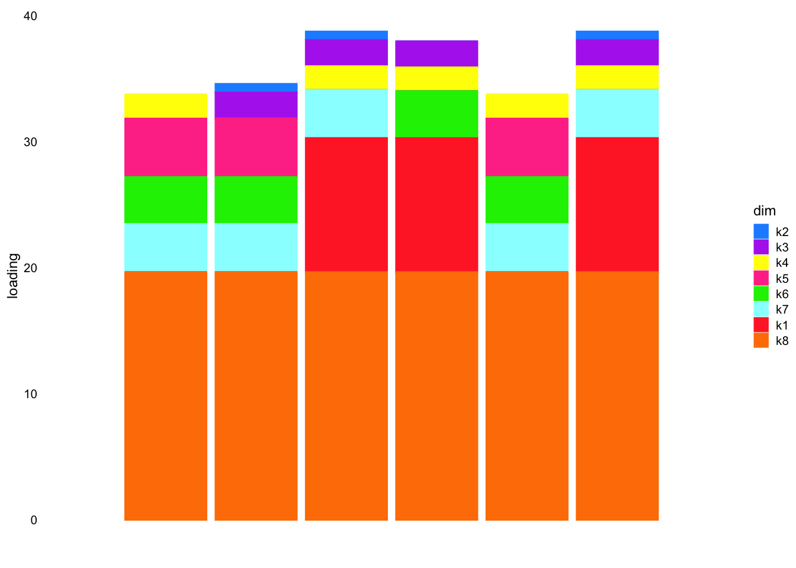
Another potential experiment is to use the regression fit to initialize EBCD
sessionInfo()R version 4.3.2 (2023-10-31)
Platform: aarch64-apple-darwin20 (64-bit)
Running under: macOS Ventura 13.6
Matrix products: default
BLAS: /Library/Frameworks/R.framework/Versions/4.3-arm64/Resources/lib/libRblas.0.dylib
LAPACK: /Library/Frameworks/R.framework/Versions/4.3-arm64/Resources/lib/libRlapack.dylib; LAPACK version 3.11.0
locale:
[1] en_US.UTF-8/en_US.UTF-8/en_US.UTF-8/C/en_US.UTF-8/en_US.UTF-8
time zone: America/Chicago
tzcode source: internal
attached base packages:
[1] stats graphics grDevices utils datasets methods base
other attached packages:
[1] NNLM_0.4.4 pheatmap_1.0.12 ggplot2_3.5.0 ashr_2.2-63
[5] flashier_1.0.7 magrittr_2.0.3 ebnm_1.1-2 workflowr_1.7.1
loaded via a namespace (and not attached):
[1] pbapply_1.7-2 rlang_1.1.3 git2r_0.33.0 horseshoe_0.2.0
[5] compiler_4.3.2 getPass_0.2-4 callr_3.7.6 vctrs_0.6.5
[9] quantreg_5.97 quadprog_1.5-8 stringr_1.5.1 pkgconfig_2.0.3
[13] crayon_1.5.2 fastmap_1.1.1 mcmc_0.9-8 labeling_0.4.3
[17] utf8_1.2.4 promises_1.2.1 rmarkdown_2.26 ps_1.7.6
[21] MatrixModels_0.5-3 purrr_1.0.2 xfun_0.43 cachem_1.0.8
[25] trust_0.1-8 jsonlite_1.8.8 progress_1.2.3 highr_0.10
[29] later_1.3.2 irlba_2.3.5.1 parallel_4.3.2 prettyunits_1.2.0
[33] R6_2.5.1 bslib_0.7.0 stringi_1.8.3 RColorBrewer_1.1-3
[37] SQUAREM_2021.1 jquerylib_0.1.4 Rcpp_1.0.12 knitr_1.45
[41] httpuv_1.6.15 Matrix_1.6-5 splines_4.3.2 tidyselect_1.2.1
[45] rstudioapi_0.16.0 yaml_2.3.8 processx_3.8.4 lattice_0.22-6
[49] tibble_3.2.1 withr_3.0.0 coda_0.19-4.1 evaluate_0.23
[53] Rtsne_0.17 survival_3.5-8 RcppParallel_5.1.7 pillar_1.9.0
[57] whisker_0.4.1 plotly_4.10.4 softImpute_1.4-1 generics_0.1.3
[61] rprojroot_2.0.4 invgamma_1.1 truncnorm_1.0-9 hms_1.1.3
[65] munsell_0.5.1 scales_1.3.0 glue_1.7.0 lazyeval_0.2.2
[69] tools_4.3.2 data.table_1.15.4 SparseM_1.81 fs_1.6.3
[73] cowplot_1.1.3 grid_4.3.2 tidyr_1.3.1 MCMCpack_1.7-0
[77] colorspace_2.1-0 deconvolveR_1.2-1 cli_3.6.2 fansi_1.0.6
[81] mixsqp_0.3-54 viridisLite_0.4.2 dplyr_1.1.4 uwot_0.1.16
[85] gtable_0.3.4 fastTopics_0.6-142 sass_0.4.9 digest_0.6.35
[89] ggrepel_0.9.5 farver_2.1.1 htmlwidgets_1.6.4 htmltools_0.5.8
[93] lifecycle_1.0.4 httr_1.4.7 MASS_7.3-60.0.1